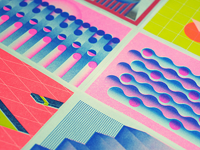
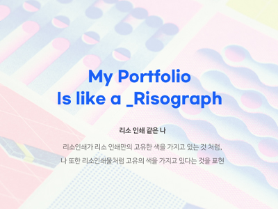

WHAT IS YEN RISO?
옌리소에 대하여
이번 직무수행능력평가 2로 진행하게 된 웹페이지에서는
YENRISO라는 큰 주제를 잡고 진행하였습니다.
저의 이름인 YEEUN 과 RISO 인쇄라는 주제를 결합하여 만든 단어입니다.
리소 인쇄는 리소 잉크 자체의 밝고 선명한 색감 및 종이에 표현되는 잉크의 독특한 질감,
그리고 형광 핑크, 형광 오렌지, 반짝이는 금색 등의 별색을 소량 인쇄할 수 있고,
다양한 작업을 손쉽게 실험해볼 수 있다는 점에서 일러스트레이터와 작가,
디자이너 등 예술 관련 창작자들이 주로 이용하고 있습니다.
이러한 독특한 리소 인쇄처럼, 나만의 색, 나만의 뜻을 보여주는 포트폴리오
웹사이트를 제작해보고자 하였습니다.
저의 디자인이 , 리소 인쇄처럼
다가가 느껴질 수 있길 바랍니다.